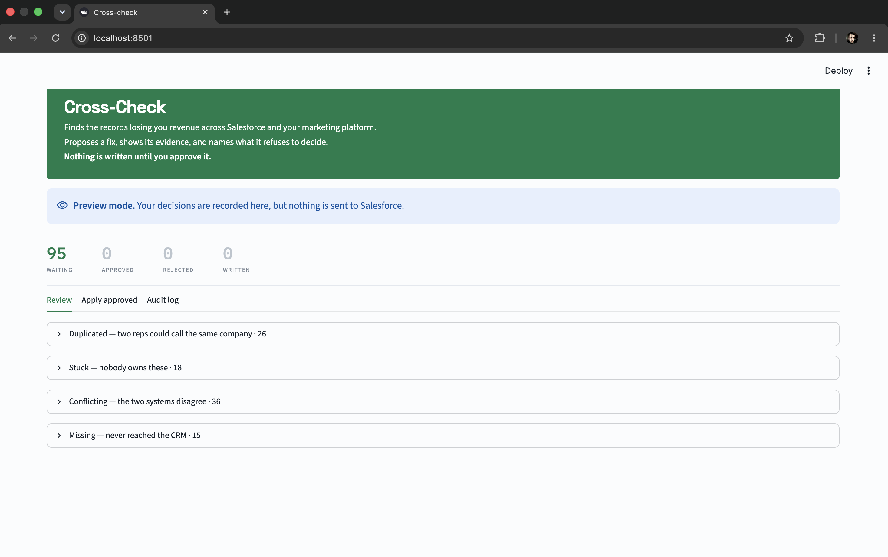
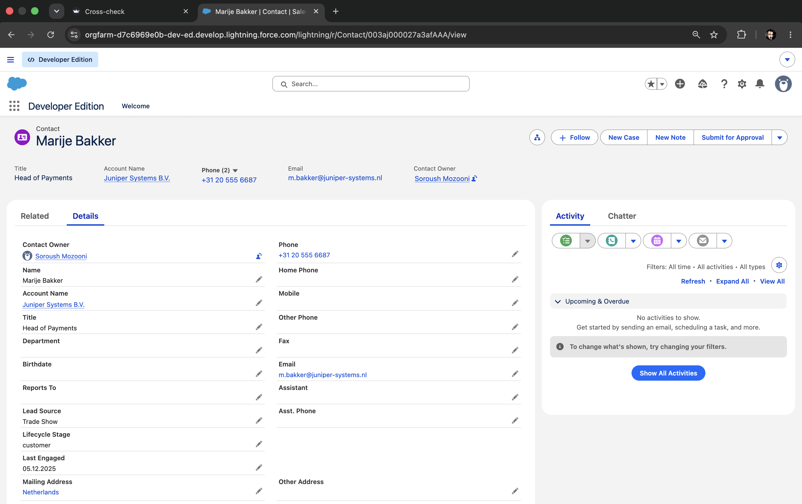
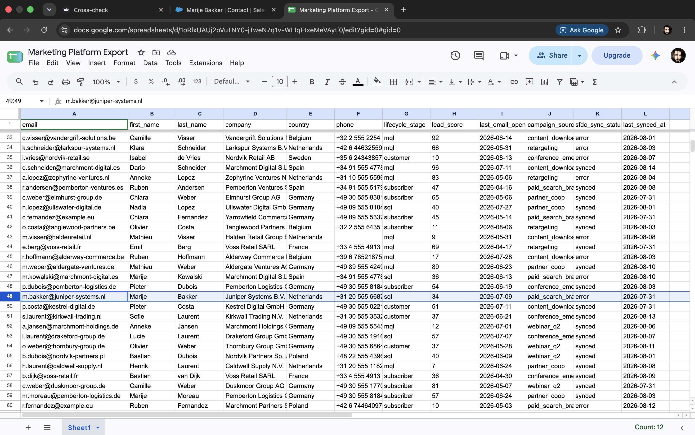
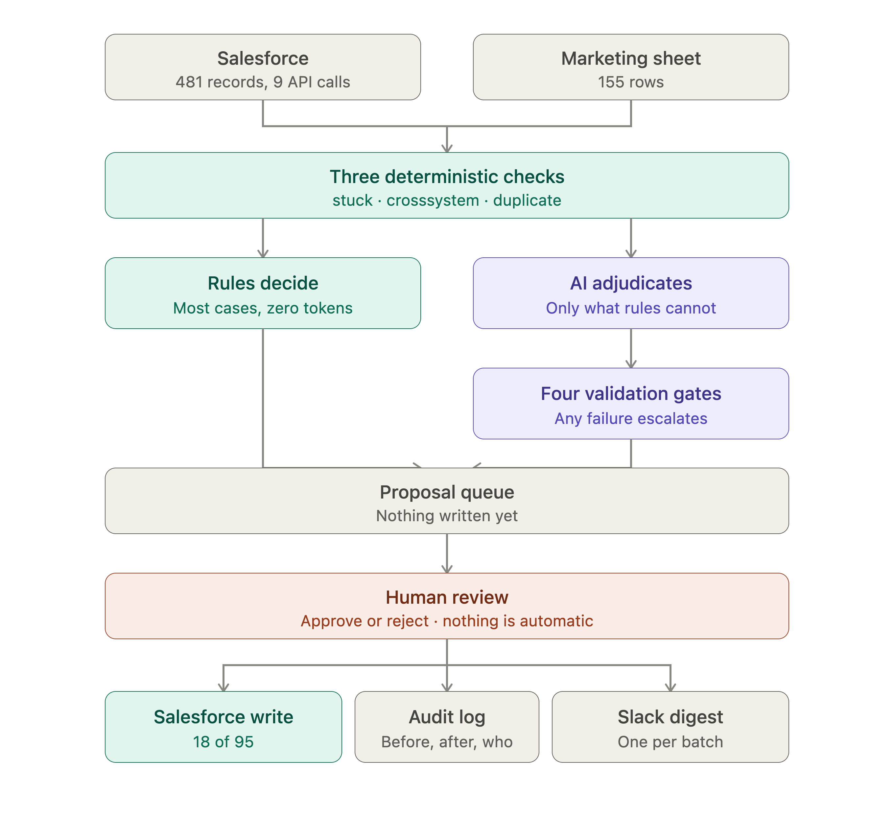
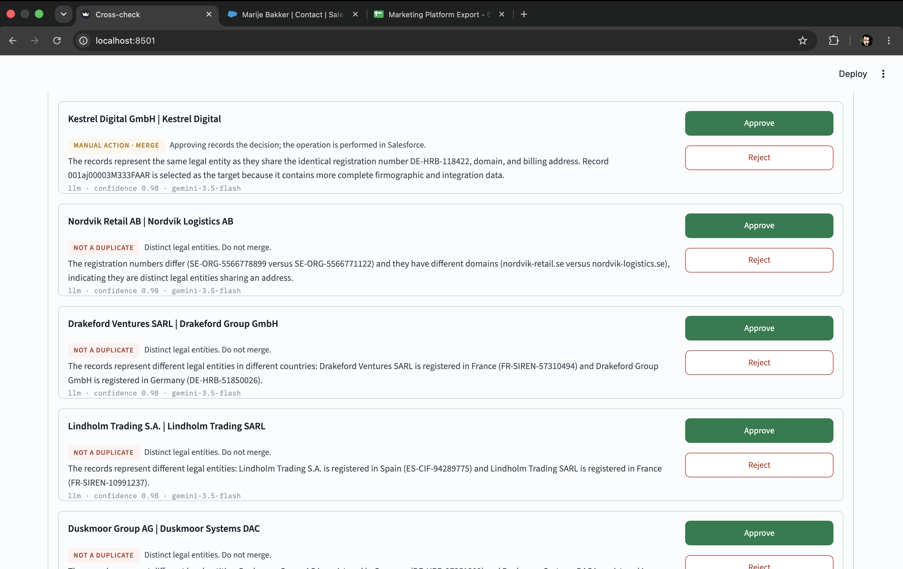
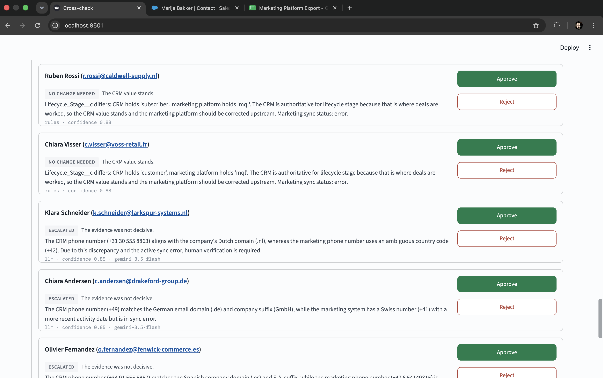
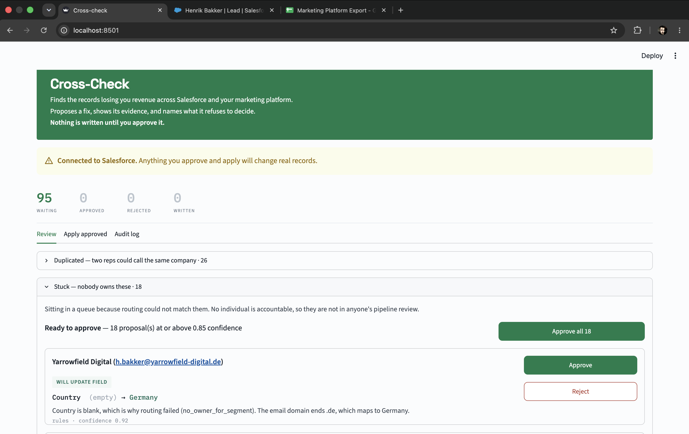
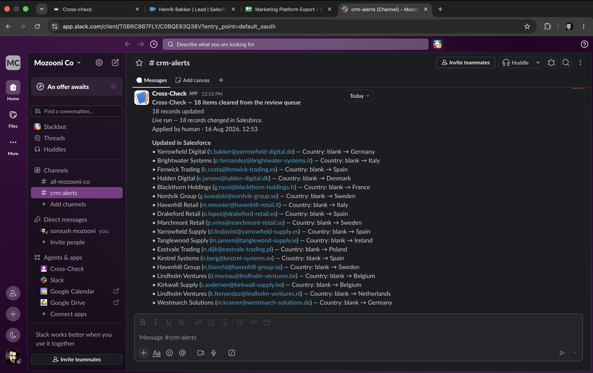
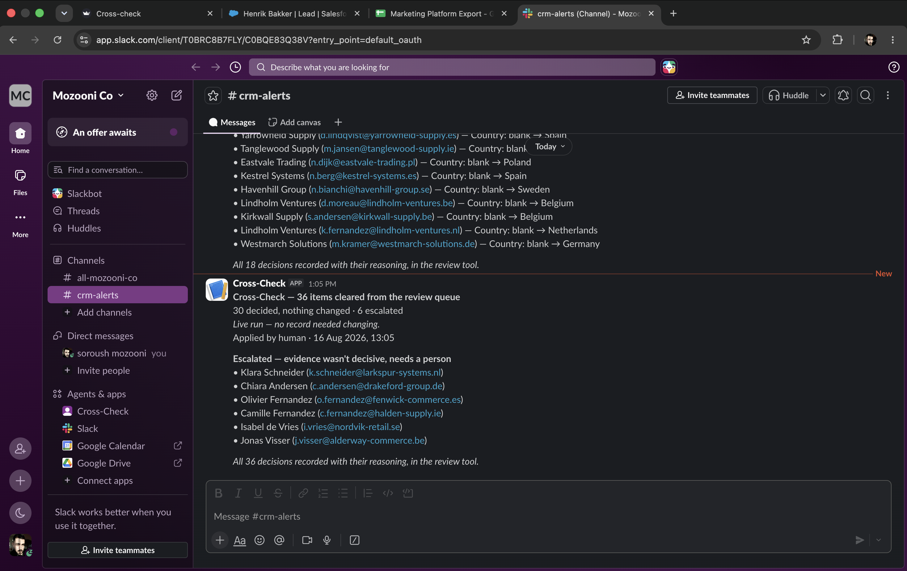

A modern company does not keep its customer information in one place. It is spread across many tools. Sales works in a CRM such as Salesforce or HubSpot. Marketing works in a platform such as Marketo, Pardot or HubSpot Marketing. Support works in Zendesk or Intercom. Finance works in a billing system. Meetings come from Calendly, calls from Aircall, contracts from DocuSign.
Each of these tools holds a copy of the same customer. They are connected by syncs and integrations that run in the background, and those syncs fail quietly. A field does not copy across. A record is created in one system and never arrives in the other. A value is updated in one place and stays old everywhere else.
Nobody notices, because each system looks correct when you open it on its own. The mistake only becomes visible when you compare two systems side by side, and almost nobody does that. There is no screen anywhere that shows both.
The cost is real and it is quiet:
These are not rare problems. They are the normal condition of any company with more than one tool. Most teams deal with them by having someone export both systems to a spreadsheet every few weeks and compare them by hand, which is slow, boring, and stops the moment that person is busy or leaves.
Cross-Check is my attempt to automate that comparison with AI — but carefully, because an AI tool that writes wrong data into a CRM is worse than no tool at all.
Cross-Check is an internal web application that looks at two business systems at the same time, finds records that are quietly costing a sales team money, and uses an LLM to propose a fix for each one with the evidence behind it. A person reviews every proposal. Nothing is written to the CRM until a human approves it.
The two systems are Salesforce and a marketing platform. In this project the marketing platform is a Google Sheet that plays the role of a tool like Marketo. The sync problems between the two systems are modelled realistically. The vendor is not.
Rules find what rules can find. An LLM decides only what rules genuinely cannot decide. Nothing reaches the CRM without a person approving it.
All the data is synthetic, generated with a fixed random seed so anyone can reproduce it. This means I can talk about accuracy and behaviour, but I make no claim about hours saved or revenue recovered. Those numbers would not be honest on invented data.

Nobody in a sales team ever complains that a domain name is formatted incorrectly. They complain that a deal was lost and nobody found out for three weeks.
That difference shaped the whole project. Every check comes from a real complaint that revenue operations people describe, not from an idea of what “clean data” should look like.
| What the record looks like | What it costs the business |
|---|---|
| A lead arrives with no country, so routing cannot assign it to anyone | Nobody owns it. It sits in a queue and nobody calls. |
| The same company exists twice in the CRM | Two salespeople call the same customer. |
| Salesforce and the marketing platform hold different values for the same person | Any report gives a different answer depending on which system you ask. |
| A person exists in marketing but never reached the CRM | Marketing thinks sales is working the lead. Sales does not know they exist. |
These four are the four shapes a data problem can take: too many records, too few, incomplete, and contradictory.
Because of this, the review screen is grouped by what the problem costs, not by the type of technical error. The sections are called Stuck, Duplicated, Conflicting and Missing. An alert that says “nobody owns these” gets acted on. An alert that says “field Country is null” does not.
Here is the disagreement problem in practice. The same person in two systems at the same moment:

customer.
sql.One system believes she already bought something. The other is still prospecting her. Both cannot be right, and nobody looking at only one system would notice.
Salesforce + Marketing platform → Deterministic checks → LLM adjudication (only where needed) → Validation gates → Proposal queue → Human review → Write-back + Audit log + Slack digest

The colours answer one question: who decided this? The purple area is deliberately small. The LLM touches one step of the pipeline, and its output is a proposal, not an action.
This is not an autonomous agent, and that is on purpose. A better description is LLM-in-the-loop automation. The failure mode of a bad CRM write is silent — nothing breaks, no error appears, and a report looks wrong six weeks later when nobody can tell which records to distrust. A system writing into a business system of record is the wrong place to spend autonomy.
A system that is 95% accurate and never says “I’m not sure” is more dangerous than one at 88% that escalates cleanly.
Real company data would not work, because I would have no way to check whether the system was right. So scripts/generate_data.py creates the whole dataset from a fixed seed. It produces 481 Salesforce records, 155 marketing rows, and 154 deliberate defects across 12 types.
It also writes data/defects.json — the answer key, recording which record carries which defect and what the correct resolution is. Everything I later measure is measured against this file.
The generator also checks its own work and refuses to save if the data and the manifest disagree. This mattered: at one point the manifest recorded ten phone conflicts while the data had no phone column at all. A test fixture that disagrees with its own answer key is worse than having no answer key, because it produces confident wrong measurements instead of no measurement.
This project includes different Python scripts and files. These are the parts that matter.
checks/ contains all detection logic, using plain rules only. No LLM is called at this stage, which is why detection costs nothing.
stuck.py finds leads owned by a queue instead of a person. When a lead has no country, routing cannot decide who should get it. The check reads the email domain ending (.de, .it, .nl) and maps it to a country. All 18 of these are solved by that one rule.crosssystem.py compares the two systems record by record. It contains an important decision: some fields have a clear owner. Lifecycle stage belongs to the CRM, because that is where deals are worked — so when the systems disagree, the rule decides immediately and the marketing platform is corrected upstream. Phone numbers are different. Nobody owns a phone number, so those cases go to the LLM.duplicate.py finds accounts that might be the same company, in three stages. The middle one is the most interesting part of the project, described below.adjudicator.py is the only file that talks to the LLM, and it holds the validation gates. llm.py handles the API call itself — JSON mode, temperature 0, request pacing, and graceful behaviour when quota runs out.
scan.py runs the checks, sends only ambiguous cases to the adjudicator, and fills the queue. db.py holds the proposals, the audit log, and an idempotency key per issue so running a scan twice never creates the same proposal twice.
app.py is the Streamlit review screen. writer.py is the only file in the project that changes anything in Salesforce. slack_client.py sends one summary per batch. eval/ builds and runs the 29-case test set used to compare prompt versions.
Four duplicate pairs were deliberately placed in the data. One almost escaped detection completely.
Nordvik Retail AB and Nordvik Logistics AB are different companies sharing a registered address in Stockholm. By name they score 67 out of 100 on similarity. The problem is that unrelated companies score the same.
| Pair | Similarity | Real duplicate? |
|---|---|---|
| Meridian Freight B.V. / Meridian Freight Ltd | 100 | Yes |
| Nordvik Retail AB / Nordvik Logistics AB | 67 | Yes |
| Kestrel Digital GmbH / Kestrel Trading AG | 73 | No |
| Nordvik Retail AB / Nordvik Partners AG | 67 | No |
The obvious fix is to lower the threshold until the real pair is caught. But at 67 there is a real pair and a false pair with the same score. No threshold separates them, because the score carries no information at that range. Lowering it would flood the queue with every pair of companies sharing part of a name.
So instead of loosening the existing test, I added a different one: identical registered address. That single stage found exactly 3 collisions across 120 accounts — precisely the 3 pairs I had scripted, with zero false positives.
Precision came from adding a different kind of evidence, not from loosening the existing kind.
A shared address is never a reason to merge two companies — corporate groups register subsidiaries at one address all the time. But it is a reason to look, and looking is what allows the next stage to refuse on the registration numbers.
Every deduplication tool demonstrates itself by merging records. Almost none demonstrates a refusal — looking at two records that appear identical and saying no, these are different companies, and here is how I know.
That is the harder case. Merging two different legal entities in Salesforce moves their contacts, opportunities and cases together, applies survivorship rules field by field, and cannot be undone.
Each scripted pair is decided by a different kind of evidence, so a model that learned one rule cannot get all four right:
| Pair | Decision | Why |
|---|---|---|
| Meridian Freight B.V. | Meridian Freight Ltd | Refuse | NL-KVK-51209834 against UK-CRN-09183422 — two countries |
| Nordvik Retail AB | Nordvik Logistics AB | Refuse | Same country, same address, different registration numbers |
| Kestrel Digital GmbH | Kestrel Digital | Merge | Identical registration number DE-HRB-118422 |
| Halden Retail | Halden Retail Group B.V. | Merge | Same domain and address, one record almost empty |

The system also correctly refused pairs that were never meant to be test cases — randomly generated companies that happened to look similar by accident. One was a second Nordvik pair, Partners Sp. z o.o. against Partners AG, refused because one is Polish and the other German.
So two Nordvik decisions now sit in the same queue. Same name stem, both scoring 67, one placed by me and one that appeared by chance, both handled correctly.
Handling cases nobody anticipated is stronger evidence than passing tests you wrote yourself.
The LLM answers one question in structured JSON: given this evidence, what should happen to this record? It chooses one of five actions.
| Action | Meaning |
|---|---|
update_fields | Change a field. The only action that touches a record. |
merge | Same company, but a person must perform the merge. |
create_crm_record | Should exist in the CRM, but a person must create it. |
no_action | I am confident the right answer is to change nothing. |
escalate | The evidence is not decisive. A person should look. |
The last two are opposite outcomes and must never share a word. no_action at 0.98 confidence means the system was sure. escalate means it was not.

rules · confidence 0.88 or llm · confidence 0.85 · gemini-3.5-flash.That small line is the architecture made visible. You can see which decisions cost a token and which did not, without reading any code.
Every LLM response is checked before it can become a proposal: it must parse against the expected schema, the action must be one of the five permitted ones, every field it names must exist in Salesforce according to the live schema, and confidence must be between 0 and 1.
A fifth rule covers actions that decide something without editing a field. merge, no_action, escalate and create_crm_record must carry no field changes. If any gate fails, the item goes to a human. It is never written and never silently passed.
These gates are not decoration, and I have a logged case that proves it. During my first evaluation, the LLM returned a well-reasoned merge at 0.95 confidence — and attached a field edit to it, trying to rename the account as part of the merge. The gate rejected it:
Response rejected by validation: merge must not carry proposed_changes (got 1)
I fixed it in two places, and this is the principle I took from it:
Prompt guidance is a request. A validation gate is a guarantee.
I corrected the prompt so the LLM would stop doing it, and kept the gate so that if a future model does it again, nothing gets through. A perfect score only shows the LLM was not wrong that day. It says nothing about what happens when it is.
Two actions are decided but deliberately not performed, no matter how confident the AI is.
Merging accounts moves contacts, opportunities and cases to a new parent, applies survivorship rules per field, and cannot be undone. A reviewer would want to control that in the CRM anyway.
Creating a contact needs two things the marketing data does not contain: which account it belongs to, and who owns it. A contact with no account appears on no account page and is reached by no territory rule. One with the wrong owner silently misroutes the lead and corrupts the response-time clock this system exists to measure.
The system still does the difficult part — it finds the pair, weighs the evidence, names which record should survive, and explains why. A person performs the operation. The honest way to handle a limit like this is to state it in the interface, not to leave the button quietly missing.
writer.py is the only file that changes anything in Salesforce. Dry run is the default, so real writes need an explicit setting. Live values are re-read immediately before writing, because somebody may have edited the record since the proposal was created — if the field already holds the correct value, the writer skips it and says so. Only the fields in the proposal are touched, and every change is recorded with the before value, the after value, the approver, and whether the run was live.

After each batch of approvals is applied, the system posts one summary to Slack through an incoming webhook. Three decisions shaped it.
One message per batch, never one per decision. A review of 95 items would otherwise produce 95 notifications. By about number 20 somebody mutes the channel, and then the one message that mattered gets missed too.
No LLM writes the message. It is counting plus a template. Using an LLM here would spend tokens on arithmetic and contradict the first design rule.
Slack is not the audit trail. The audit trail is the database table with every before and after value, the approver, and whether the run was live. Slack is where a team notices that the trail has new entries. Slack’s free plan even hides messages older than 90 days, which makes the point by itself.
The message names every record updated with its before and after value, every duplicate pair kept apart, and anything the reviewer overruled. A count of refusals tells a reader nothing useful. Which companies were kept apart is the fact a reviewer can actually check.


Measured on synthetic data, from one full run.
A full scan produces 95 proposals from 9 Salesforce API calls and roughly 31 LLM calls. Nine API calls for 481 records is possible because queries are batched rather than run per record.
Thirty-one LLM calls for 95 proposals is the more interesting number. All 18 stuck leads are solved by rules with zero AI calls. Of the 36 conflicts, 26 are solved by rule because the CRM owns lifecycle stage. Only the phone conflicts reach the LLM.
Cost scales with ambiguity, not with volume. Total LLM spend for the entire project, including all development and testing: €1.03.
| What happened to all 95 decisions | Count |
|---|---|
| Written to Salesforce | 18 |
| Decided, nothing needed changing | 54 |
| Handed off to a person | 16 |
| Escalated — evidence not decisive | 6 |
| Declined by the reviewer | 1 |
Ninety-five decisions. Thirty-four audit entries. Eighteen records changed. Sixty-one wrote nothing at all.
One proposal was rejected by hand. A contact marked as a sales qualified lead had a lead score of 43, while everything else marked the same way scored in the 80s. Creating that record would have imported a marketing data error into the CRM rather than fixing it. The individual record is not the point — a queue where all 95 items are approved is not evidence that anyone reviewed them.
After all 95 proposals were reviewed and applied, I ran a full scan again:
stuck found 18 queued 0 escalated 0 crosssystem found 51 queued 0 escalated 0 duplicate found 26 queued 0 escalated 0 Pending proposals: 0 API calls this run: 9
Every issue was found again and nothing was proposed again, because each one already had a resolved proposal under a matching key. Zero LLM calls, nine API calls.
I wrote a golden test set of 29 cases by hand from the defect manifest, and ran three prompt versions against it.
| Measure | v1 | v2 | v3 |
|---|---|---|---|
| Correct | 28 | 29 | 29 |
| Escalated | 12 | 12 | 5 |
| Correct on hard cases | 10/10 | 10/10 | 10/10 |
All three versions score almost the same on accuracy. Not because all three prompts are equally good, but because most test cases can be decided from one clear identifier, and any competent model gets those right regardless of the prompt. So “100% accurate” would describe my test set, not my system. I do not use that number.
The useful column is escalations. Version 3 cut them from 12 to 5 — 58% fewer items needing a human — while accuracy stayed the same. That is a real improvement, and it is measurable exactly because accuracy did not move.
Two limitations I would rather state than have someone find: the golden set comes from the same manifest that generated the data, so it measures internal consistency more than external correctness; and 29 cases is a small sample, which is why I report counts rather than percentages with decimal places.
The first evaluation reported 13 cases as undetected, suggesting a serious detection problem. The system had detected all of them — the harness had failed to match them up.
A test harness is code too, and it is trusted more than the thing it measures. Before accepting a bad result about the system, check the instrument. This one was wrong in the pessimistic direction, which is the lucky case — it caused an investigation. Wrong in the optimistic direction, it would simply have been believed.
My .env file said USE_STUB=false, but every escalation was still answered by the stub. No error, no warning. The setting was read at import time without loading the environment first, so the behaviour depended on which module had been imported first.
The fix was to load configuration in the module that uses it, and to print the active mode at startup. The same bug appeared a second time in the file that writes to Salesforce. That time it failed safely — but by accident of which string was chosen as the default, not by design. A safety property that depends on a person remembering is not a safety property.
The baseline count of “stuck leads” counts leads whose owner is a queue. The check fixes the blank Country field that caused routing to fail. But filling in the country does not reassign the lead — Salesforce only reassigns when assignment rules exist, and a Developer Edition org has none.
So the headline number could not move, even though every fix was correct. The number that did move was the sub-count: blank countries on queue-owned leads, 18 → 0.
The snapshot was measuring the symptom while the check was fixing the cause.
I could have made the chart look better by redefining “stuck” so the total would fall. I did not, because that is changing the measurement after seeing the result. This is the second time in the project that the measurement was wrong rather than the thing being measured. Both are written up, because finding them is evidence of the same care the project argues for.
Worth answering honestly, because a portfolio project that claims to beat commercial software is not credible.
For deduplication alone: buy it. That problem is solved. Cloudingo and LeanData do it well and my project is not better than they are.
What those tools do not cover is the cross-system layer. They live inside one platform and do not check whether the CRM agrees with a marketing platform, a billing system, or a partner’s spreadsheet. And they do not solve the judgement calls they escalate anyway — a 0.87 match score does not explain itself in a sentence a human can check in three seconds.
So: buy the commodity, and build the thin layer on top that is specific to how your own funnel actually breaks.
describe endpoint.The model version is pinned rather than set to “latest” for two reasons. The evaluation compares prompt versions against a fixed test set, so a model changing underneath would make any difference unattributable. And the audit log records the model version alongside the prompt version, so every past decision must stay reproducible.
Cross-Check brings together cross-system data comparison, deterministic rule engines, LLM adjudication with structured output, validation gates, human-in-the-loop approval, safe write-back with a full audit trail, and Slack notification into one working application.
The technical challenge was not calling an LLM. That part is easy. The challenge was building a system that decides what to send to the AI at all, checks everything that comes back, and knows where to stop.
Of 95 decisions in one run, 18 changed a record and 61 correctly changed nothing.
Most AI tooling is judged by how much it does. For anything that writes into a business system of record, I think the more useful question is whether it knows when not to.
The full code, including the data generator, the three prompt versions, the evaluation harness and the test suite, is on GitHub: github.com/Vizbase/Cross-Check. All data in this project is synthetic.